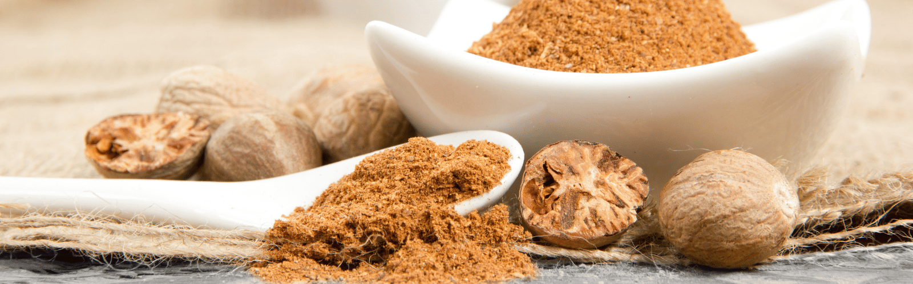

Great food IS good food.
But nutmeg is the spoonful of wow !

Let's see how
nutmeg
is the plot twist your plate never saw coming :
La classique béchamel
Gratin de chou fleur
Endives au jambon
L'élévation
Gratin dauphinois
Quiche lorraine
Gratin de pomme de terre à l'ancienne
L'audace
Lotte à la muscade
Tarte au maroilles
Quiche ricotta et cresson
Le brin de gourmandise
Pain d’épices
Vin chaud
Crème au chocolat noir